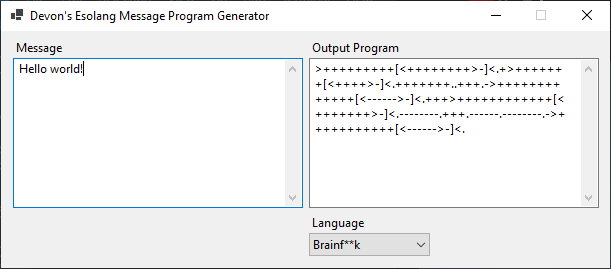
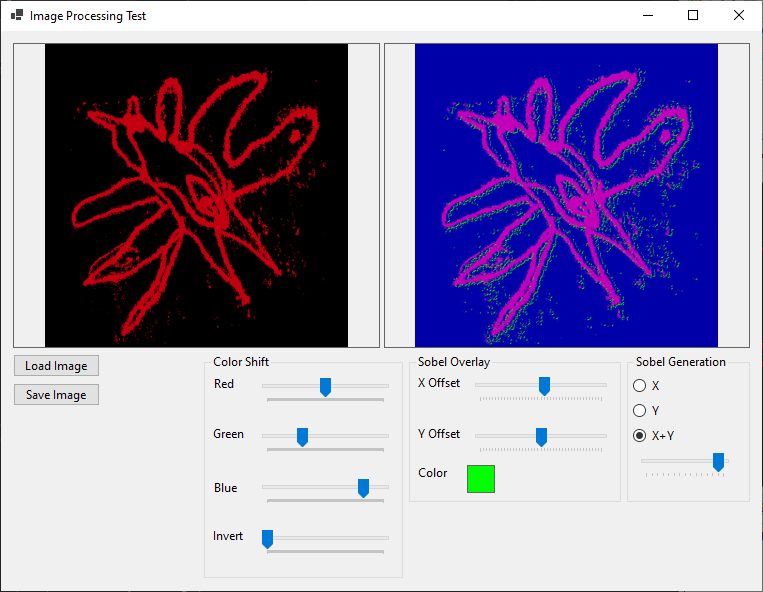
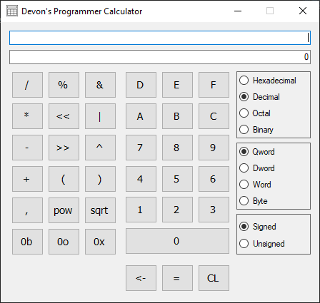

Devon Artmeier
Hello! My name is Devon Artmeier, and I am a self-taught programmer (since 2011) with enthusiam for technology, old and new. I am from the Cincinnati metropolitan area, and I enjoy studying game development and both low and high level programming.
On this page, you can see what I am capable of and a selection of recent projects I have worked on.
I also run the Sonic CD Deconstructed Twitter account, where I post about Sonic CD's internal workings and my findings from reverse engineering the game.
Skills
- C#/.NET
- C++
- C
- Visual Studio
- SQL
- Motorola 68000
- Zilog Z80
- Direct3D 11
- OpenGL Core (3+)
- Reverse Engineering (IDA Pro)
- Windows
- Linux
- DOS
Projects
Violet Engine (2021-2022)

A C++ engine I've been working on that handles 2D graphics rendering with PNG images, Ogg audio playback, input handling, and updating actor/object code. Uses SDL2 for window management and reading input data and OpenGL 3.2 for the graphics API.
Esolang Message Program Generator (2022)
An esolang program generator written in C# that generates a program that displays a given message. Supports Brainf**k, Boolf**k, Whitespace, and LOLCODE.
Image Processing Test (2022)
A quick image processing test application I wrote in C#. Takes a source image, detects edges using the Sobel operator and renders that onto a separate image, then shifts the hue of the source image, and then overlays the rendered edges.
Sega Genesis Scroll Demo (2022)

A very basic scrolling demo written in Motorola 68000 assembly for the Sega Genesis that displays a 1024x1024 image. The standard screen resolution on the Sega Genesis is 320x224, and the plane size is set to 512x256, so scrolling and drawing new rows of tiles as it scrolls is utilized to show the full image, and also wraps infinitely.
Psy-Q Symbol Extractor (2022)
A quick and dirty tool written in C for extracting symbol data from generated Psy-Q symbol files.
Programmer Calculator (2021)
A small calculator I made for programming purposes in C#. Supports the standard math operations, alongside order of operations, and also bitwise operations such as bit shifting, AND, OR, and XOR. Binary, octal, decimal, and hexadecimal notations are supported, as well. Results can be displayed as signed or unsigned, and within a byte (8 bits), word (16 bits), double word (32 bits), or quadtruple word (64 bits). Exponent and square root functions are also supported.
Sega Genesis Palette Scroll Demo (2021)
An old, well known trick written in Motorola 68000 assembly for the Sega Genesis. Updates the palette on each line of a base pattern to draw an image. The formation of the base pattern determines how the image is distorted, which can be used for some neat effects.
Bad Apple!! Sega CD Demo (2021)
A fun demo written in Motorola 68000 assembly I made in a few days for the Sega CD that plays back the Bad Apple!! shadow art video in 30 FPS, fullscreen. The Sega CD is not known for smooth, full screen video, particularly with the slower disc drive speed and limited memory. To get this to work, I only used 2 colors, and combined 4 frames into 1 16 color image, and with palette cycling, I can choose which frame to display from it. This allows me to save on data and also be given enough time to prepare another packet of data from the disc.
Sega Genesis Emulator Detector (2019)
An emulator detector for the Sega Genesis written in Motorola 68000 assembly. It can detect multiple emulators and check if it's being run on an actual console. I made this primarily as an exercise in programming and researching emulators, but it has helped a few emulator developers iron out some kinks to make them more accurate.